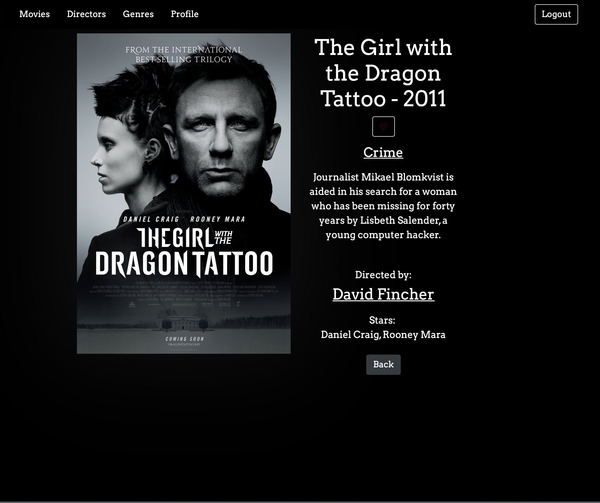
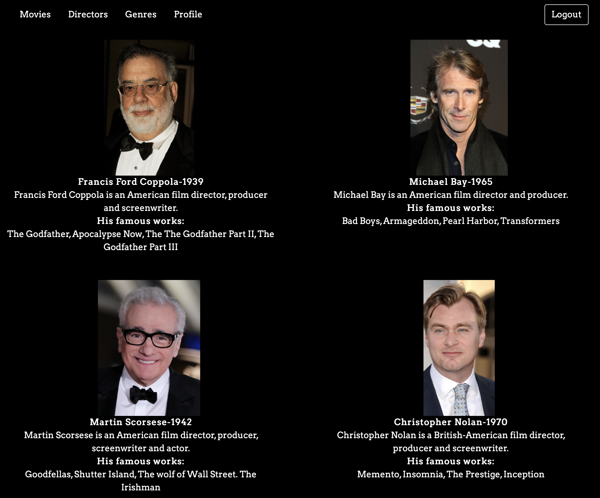
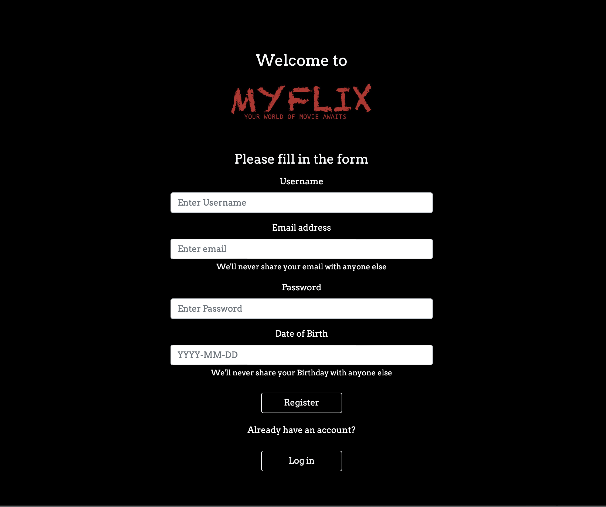
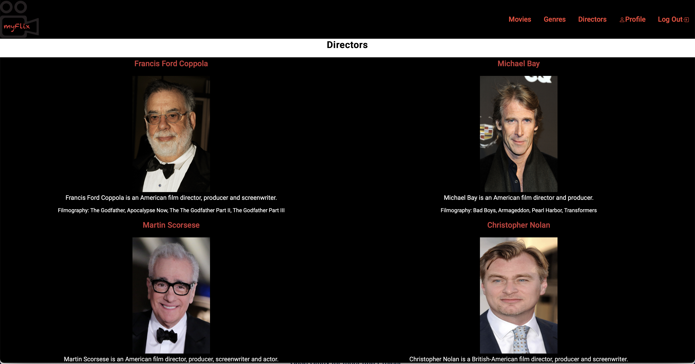

Overview
This is the server-side component of myflix movie app, developed using the MERN stack,
that provides users with access to information about movies, directors, and genres.
Users are able to create an account, update their personal data, and create a list of favorite movies.
Purpose
I have built myFlix project as part of my full-stack immersion course at CareerFoundry,
to demonstrate my mastery of full-stack JavaScript development.
Objective
The aim of the project was to have an interactive and streamlined web application where users can browse their favorite movies.
Back-End
I created a RESTful API using Node.js and Express, that interacts with a non-relational database & business logic (MongoDB & Mongoose).
The API can be accessed via commonly used HTTP methods like GET or POST. To retrieve data from and store data in the database, CRUD methods are used.
The API provides movie information in JSON format.
To test the API, I used Postman. I also included Passport & JWT to authenticate and authorize the users of the app.
And last but not least, I hosted the app's back-end API on Heroku.
React Front-End
 Using React, I created seperate components for the different views of the application.
I implemented logic to handle app requests and navigate users to different views within the app, using React-Router-development.
Using Redux and React-Redux, I have managed the app's state and data flow by implementing the flux design pattern.
And finally, I hosted the app's front-end client on Netlify.
Angular Front-End
 Using Angular, I created seperate components for different views of the application.
I used Angular material to design the app and Typedoc to comment.
Developer's-Notes
This was both my favorite & most challenging project, I was able to manage the technical complexity of backend,
create my own API and master the MERN stack. Though it wasn't smooth sailing, but persistancy, hard work and the support of my Mentor & Tutor
made it possible to conquer the obstacles.